Stories
Curated narratives built from India's development data. Each story threads together maps that tell a bigger picture.
India's North-South Divide, in 7 Maps
The same country, two development trajectories. Health, income, literacy, gender — every indicator follows the same fault line.
7 maps · 3 min read
The Gender Gap: What It Means to Be a Woman Across India
From child marriage to domestic violence to economic participation — the maps that show why gender policy can't be national.
7 maps · 3 min read
Where Bihar Falls Behind — and Why
India's most consistent outlier across every development indicator. A state-level deep dive.
6 maps · 3 min read
What India Eats: Food as Cultural Geography
Vegetarianism, beef, fish, rice vs wheat — how food maps reveal India's deepest cultural boundaries.
6 maps · 3 min read
Does Caste Still Shape Life Outcomes?
Land, crime, representation, marriage — the maps that show caste is far from gone.
6 maps · 3 min read
India's Climate Map: Heat, Water, and Vulnerability
Extreme heat, groundwater collapse, flooding, and the unequal burden of environmental crisis.
6 maps · 3 min read
Is India's Democracy Equally Healthy Everywhere?
Voter turnout, criminal MPs, internet shutdowns, press freedom — the health check varies by state.
6 maps · 3 min read
The Digital Divide, in 5 Maps
Smartphones, internet, TV, telecom towers — who has access to digital India and who is left behind.
5 maps · 2 min read
Who Gets the Safety Net?
MGNREGA, PDS, PM-JAY, pensions — government schemes reach some states far better than others.
5 maps · 2 min read
How Faith Maps Onto Geography
Religious composition, communal violence, poverty by religion — the geography of faith in India.
5 maps · 2 min read
India's North-South Divide, in 7 Maps
The same country, two different development trajectories. Here's what the data shows — and why it matters for policy.
A How India Lives Story · 3 min read
India is not one country when it comes to development outcomes. Kerala's life expectancy exceeds Chhattisgarh's by 13 years. Bihar's female literacy is half of Tamil Nadu's. The gap isn't closing — it's widening.
This story walks you through 7 maps that make this divide visible. Each one tells a piece of the same story: where you are born in India still determines how you live.

Demography
Southern states are ageing. Northern states are young. This isn't just demographics — it's the foundation of every policy difference that follows.
A state's median age tells you everything about its development trajectory. Kerala at 33 has an ageing welfare challenge. Bihar at 20 has an employment crisis. They need completely different policies, but get the same central schemes.
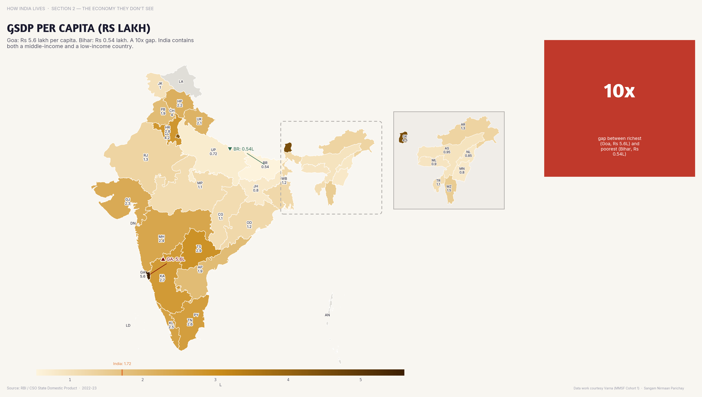
Economy
Goa's per capita income is 8x Bihar's. The economic distance between Indian states is larger than between many European countries.
The income map is the starkest. The richest Indian states are richer than the poorest countries in Europe. The poorest Indian states are poorer than sub-Saharan Africa. This is one country.
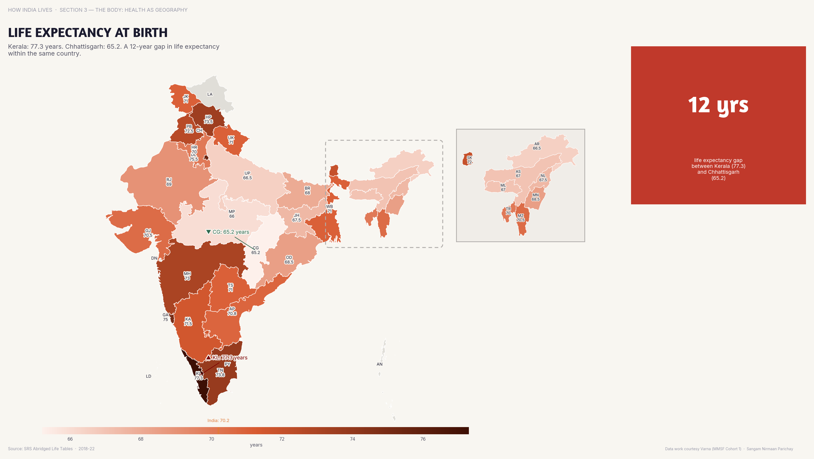
Health
Life expectancy ranges from 64 in Chhattisgarh to 77 in Kerala — a 13-year gap within the same nation.
Birth is destiny in India. A child born in Kerala today will live, on average, 13 years longer than one born in Chhattisgarh. That's not a statistic — it's a moral indictment of "national average" policymaking.

Gender
Child marriage rates vary from under 5% in Kerala to over 40% in Bihar and West Bengal.
The gender map is where the divide becomes personal. In southern states, most girls finish school before marriage. In parts of the north, marriage IS the alternative to school. These are not problems that respond to the same solution.
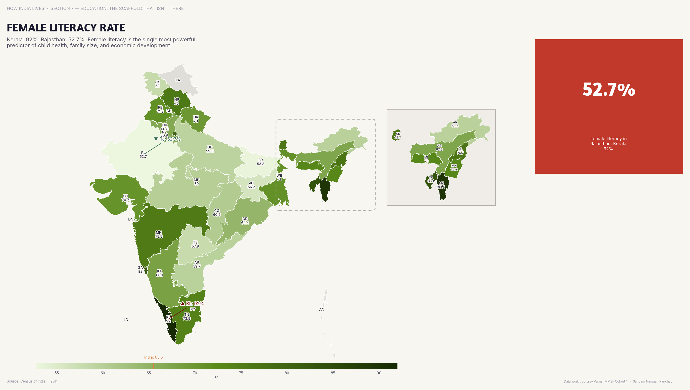
Education
Kerala's literacy exceeds 96%. Bihar's remains below 65%. The gap is generational.
Literacy is the most upstream indicator — it determines everything downstream. Health-seeking behaviour, contraceptive use, voter participation, economic mobility. A 30-percentage-point literacy gap cascades into every other indicator on this page.
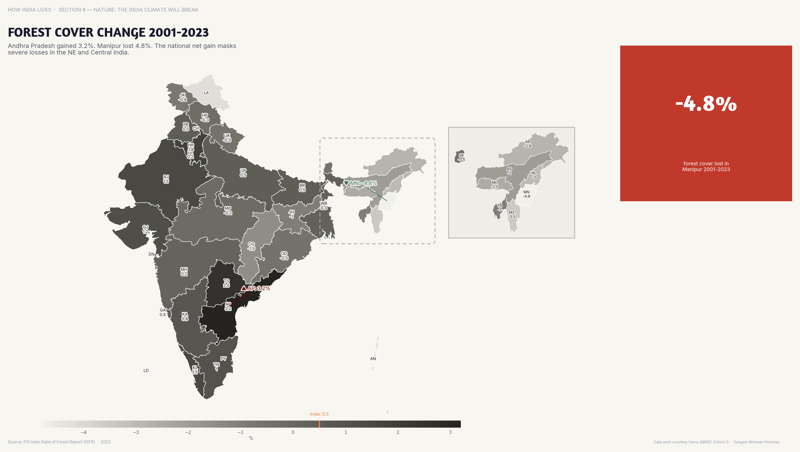
Environment
Northeast India is over 70% forested. The Gangetic plain has nearly zero tree cover left.
The environmental map tells a parallel story. States with high forest cover tend to have low economic development. Development and environment are still treated as a zero-sum trade-off — but they don't have to be.
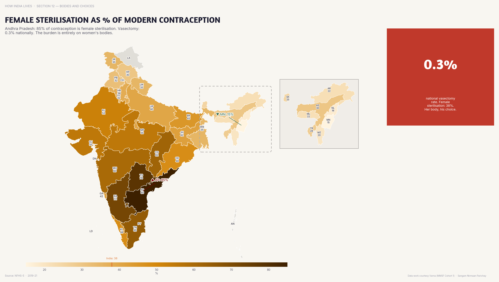
Reproductive Choices
In many northern states, female sterilisation remains the dominant form of contraception — a legacy of coercive family planning.
Seven maps. One conclusion. India's development story cannot be told in national averages. An average of Kerala and Bihar is a fiction that serves no one. The maps make this visible — and visibility is the first step toward better policy.
Every indicator on this page follows the same geographic fault line. It's not a coincidence. It's a pattern — and patterns demand systemic responses, not one-size-fits-all schemes.
Explore all 205 Maps
Part of How India Lives · An ImpactMojo Project
The Gender Gap: What It Means to Be a Woman Across India
Child marriage, domestic violence, economic exclusion, missing women. Seven maps that show why being a woman means fundamentally different things in different states.
A How India Lives Story · 3 min read
In Bihar, 40% of women were married before 18. In Kerala, it's under 5%. That single statistic captures something enormous: the experience of being a woman in India is not one experience. It's thirty-six different realities.
Child Marriage
40% of women in Bihar were married before 18; in Goa and Kerala it's under 5%. Child marriage is the gateway to a cascade of deprivation.
Child marriage isn't just a cultural practice — it's an economic one. Girls who marry young drop out of school, have children earlier, earn less, and are more vulnerable to violence. It is the single strongest predictor of women's life outcomes in India.
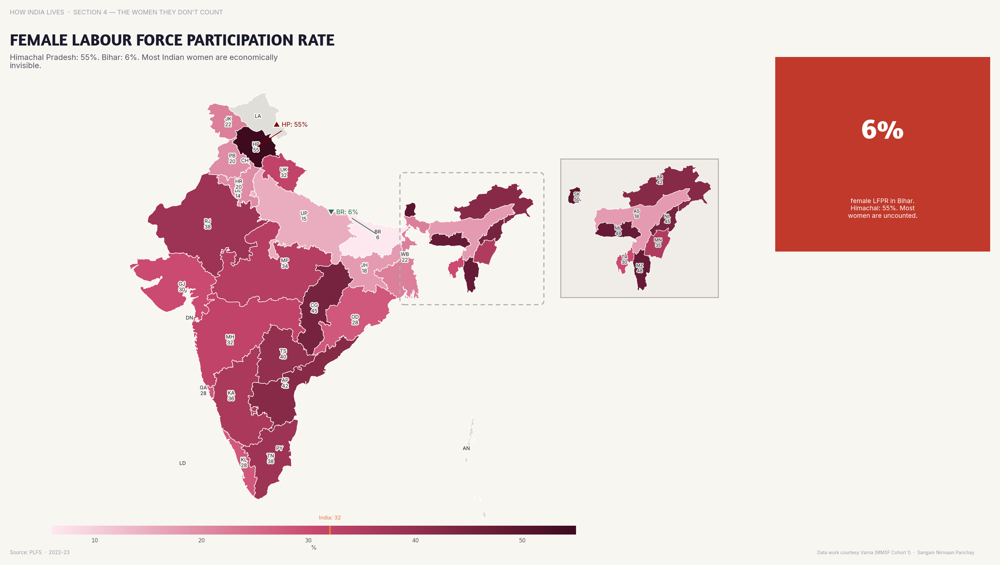
Economic Participation
Female labour force participation in Himachal is 58%; in Bihar it's under 5% — a 12x gap within the same country.
Bihar's female labour force participation is among the lowest in the world — lower than Saudi Arabia, lower than Afghanistan. This isn't about capability. It's about structural exclusion: social norms, safety, mobility, and the absence of suitable work.
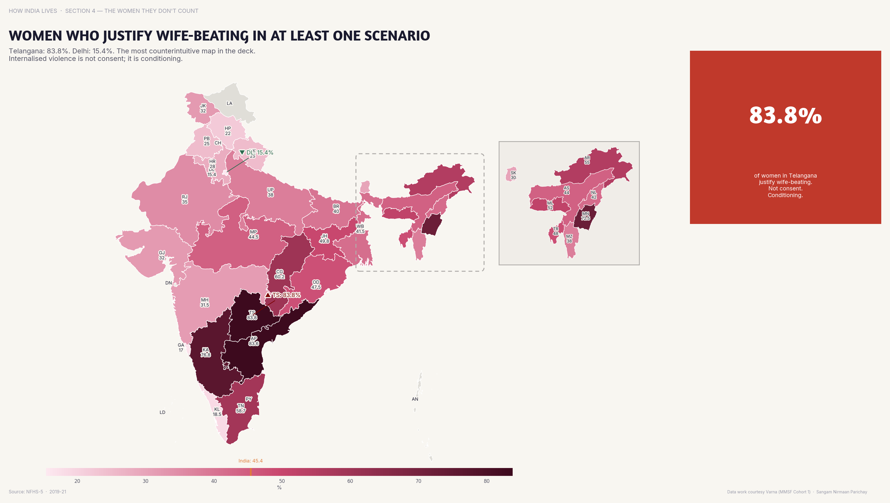
Normalised Violence
In Bihar, 40%+ women believe a husband is justified in beating his wife. This is internalised patriarchy made visible.
This map is the hardest to look at. When women themselves believe violence is justified, the problem has moved beyond policy and into culture. It takes generations of education, economic empowerment, and legal enforcement to shift.
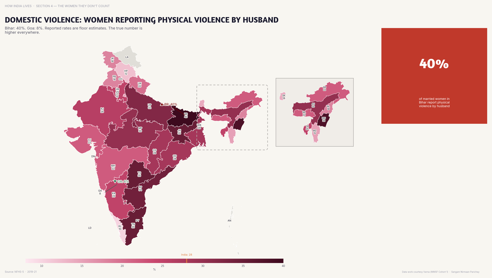
Domestic Violence
33% of Indian women have experienced physical violence from a spouse — but rates vary sharply by state.
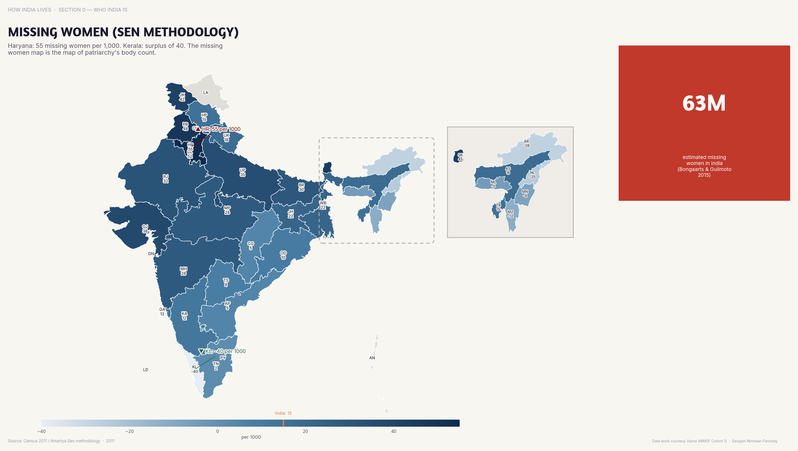
Missing Women
India has 63 million "missing women" — the cumulative toll of sex-selective abortion, neglect, and violence.
Amartya Sen's "missing women" concept quantifies the demographic shadow of gender discrimination. 63 million women who should be alive but aren't. This isn't historical — the sex ratio at birth in Haryana and Punjab still signals ongoing selection.
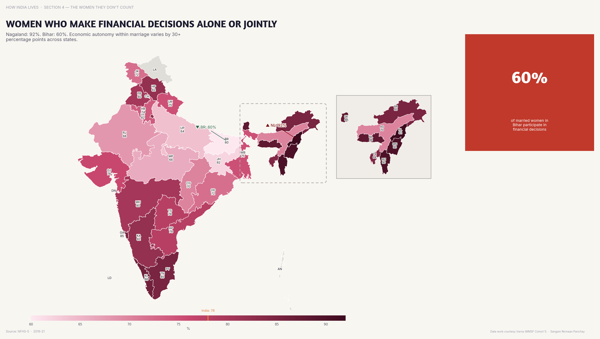
Financial Autonomy
In southern states, 80%+ women participate in household financial decisions; in parts of the north, the majority have no say.
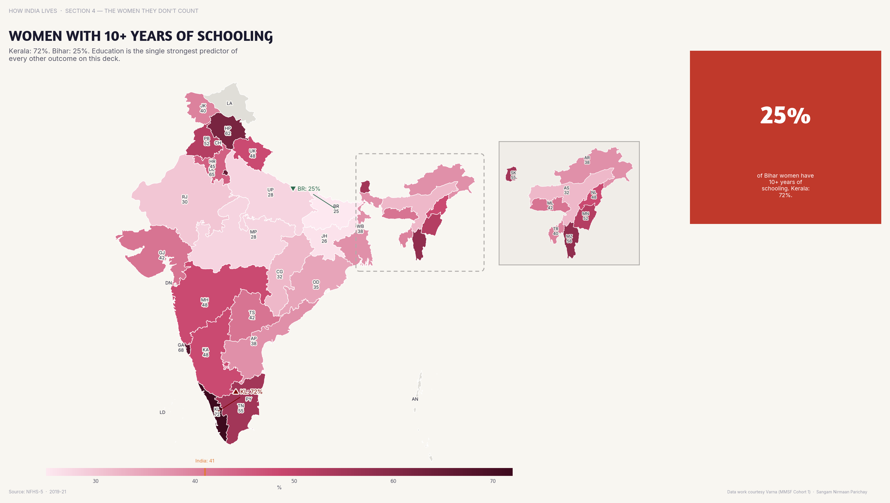
Education
Women with 10+ years of schooling: the single most transformative indicator for gender equality.
Every gender indicator improves when women's education improves. Child marriage drops. Labour participation rises. Violence decreases. Health outcomes improve. The maps tell us the prescription is already working in some states — the question is why it hasn't been applied everywhere.
Explore all gender maps
Part of How India Lives · An ImpactMojo Project
Where Bihar Falls Behind — and Why
India's most consistent development outlier. Six maps that show the depth of the gap — and what it means for 130 million people.
A How India Lives Story · 3 min read
Bihar appears at the wrong end of almost every development indicator in India. Not sometimes. Not on a few metrics. On virtually all of them. Health, income, education, infrastructure, gender — the consistency is the story.
Income
Bihar's per capita income is among the lowest in India — 8x lower than Goa's. 130 million people live in this gap.
The income map is where it starts, but it's not where it ends. Low income in Bihar isn't just about money — it's about what money buys: healthcare, education, nutrition, mobility, safety. Every map that follows is a consequence of this one.
Literacy
Bihar's literacy rate remains below 65% — 30 points behind Kerala. The gap is generational and self-reinforcing.
A parent who can't read can't help their child with homework. Low literacy reproduces itself across generations. Bihar's education crisis isn't just about school infrastructure — it's about the entire ecosystem of learning being absent.
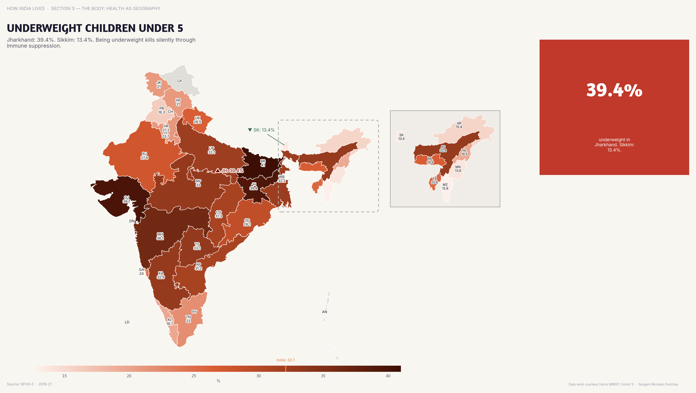
Child Nutrition
Over 40% of under-5 children in Bihar are underweight. This is malnutrition at a scale that shapes the state's future workforce.
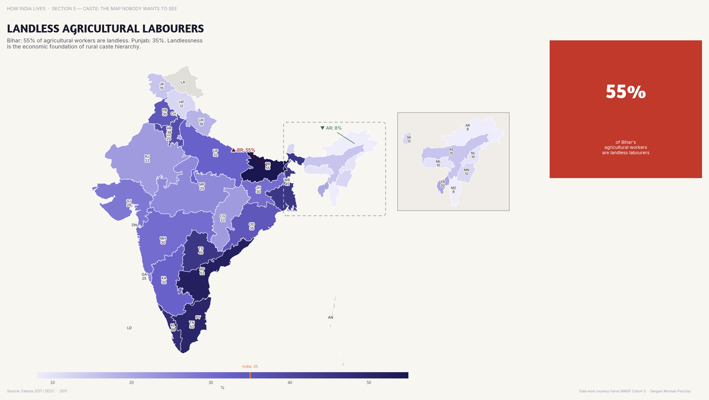
Land & Labour
In Bihar, 40%+ of agricultural workers are landless labourers — working others' land with no asset base of their own.
Landlessness is the hidden engine of Bihar's poverty. Without land, you can't borrow, can't invest, can't leave. The agrarian structure locks millions into low-productivity labour with no exit ramp.
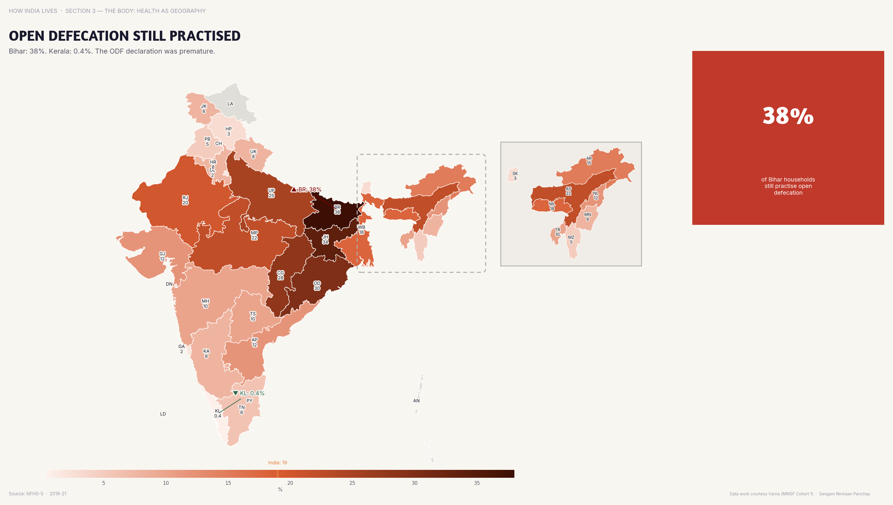
Sanitation
Open defecation has dropped dramatically under SBM but persists at high rates in Bihar — infrastructure alone doesn't change behaviour.
Gender
40% of women in Bihar married before 18. Child marriage is both a symptom and a cause of the development trap.
Bihar's problem isn't any single indicator — it's that every indicator reinforces every other. Low income leads to low education leads to poor health leads to early marriage leads to low income. Breaking this cycle requires not one intervention but a systemic transformation. The maps make the scale of that challenge undeniable.
Explore all 205 Maps
Part of How India Lives · An ImpactMojo Project
What India Eats: Food as Cultural Geography
Vegetarianism, beef, fish, rice vs wheat, dietary diversity. Six maps that reveal India's deepest cultural fault lines through food.
A How India Lives Story · 3 min read
Nothing divides India more neatly than food. Rajasthan is 60% vegetarian. Bengal is under 5%. Kerala eats beef. Gujarat won't touch eggs. These aren't just dietary preferences — they're identity markers that map onto religion, caste, geography, and politics.
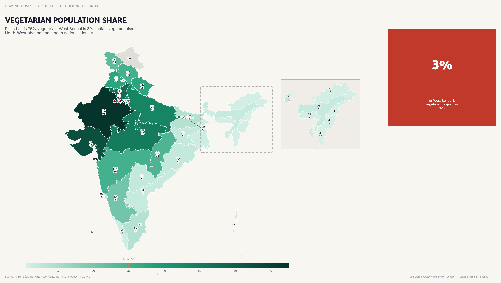
Vegetarianism
Rajasthan and Gujarat are 60%+ vegetarian; Bengal and Kerala are under 5%. India's vegetarian identity is a north-west phenomenon, not a national one.
The vegetarianism map challenges a foundational national myth. India is not a "vegetarian country." The majority of Indians eat meat. But the vegetarian minority is politically and culturally dominant — shaping food policy, school midday meals, and airline menus for a nation that mostly eats non-veg.
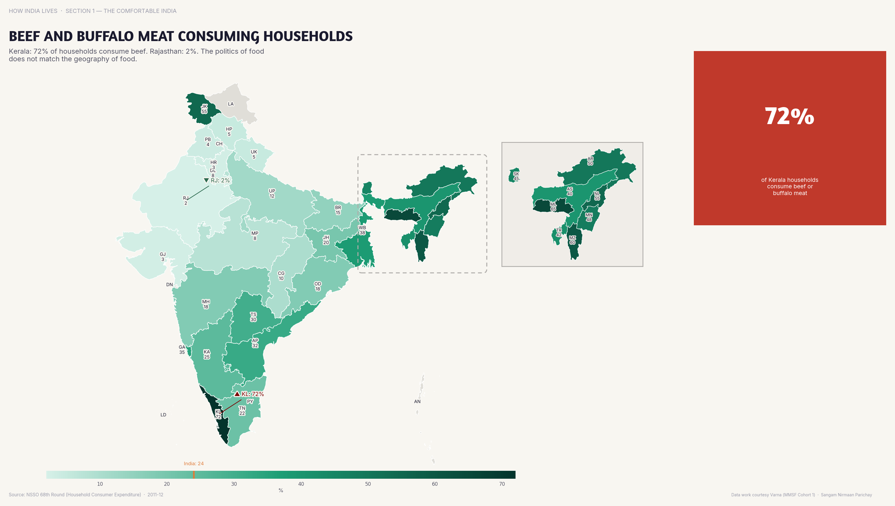
Beef and Buffalo Meat
Over 70% of households in Kerala and NE states consume beef or buffalo meat. In the Hindi heartland, it's near zero. Food is politics.
Beef is the most politically charged food item in India. The map shows it's also the most geographically divided. What's everyday protein in Kerala is a lynching offence in UP. Policy that treats India as one food culture is policy that erases half the country.
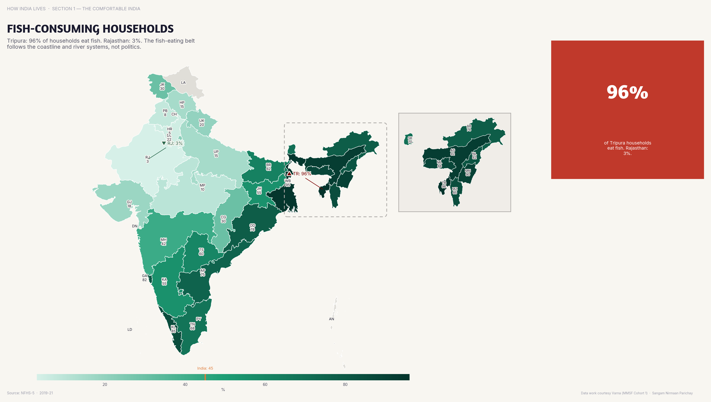
Fish
80%+ households consume fish in Bengal, Odisha, and NE states. Under 5% in Rajasthan. The coast and rivers shape the plate.
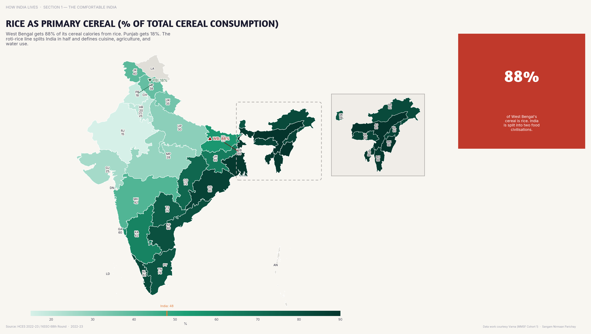
Rice vs Wheat
Rice dominates 90%+ of cereal consumption in the South and East; wheat dominates the North and West. India's oldest cultural divide, visible on every plate.
The rice-wheat line is one of India's oldest geographic divisions. It follows the Vindhyas, roughly — south and east eat rice, north and west eat wheat. PDS policy, MSP decisions, and agricultural subsidies all have distributional consequences along this line.
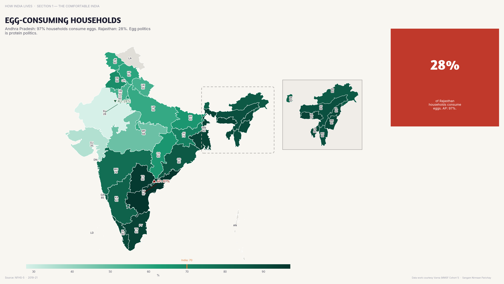
Eggs
Andhra Pradesh and Tamil Nadu are 90%+ egg-consuming; Rajasthan is under 20%. The egg is a nutrition policy battleground.
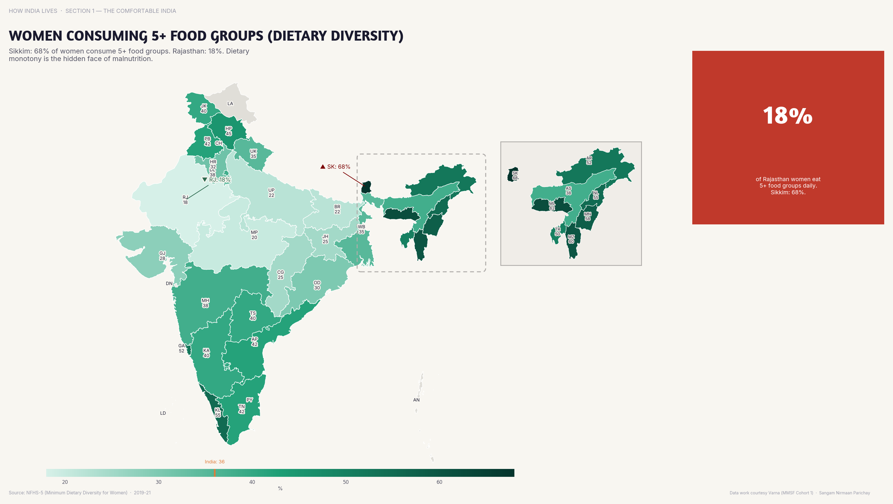
Dietary Diversity
Only 25% of Indian women consume 5+ food groups daily. Dietary diversity is a luxury most Indian women cannot afford.
India's food maps are identity maps. They trace caste, religion, geography, and class more precisely than any survey. Understanding what India eats — and what it refuses to eat — is understanding the country's deepest divisions. Policy that ignores these maps isn't inclusive. It's blind.
Explore all food and culture maps
Part of How India Lives · An ImpactMojo Project
Does Caste Still Shape Life Outcomes?
Land ownership, crime, political representation, marriage — six maps that show caste is far from a thing of the past.
A How India Lives Story · 3 min read
India's constitution abolished untouchability in 1950. Seventy-five years later, inter-caste marriage remains below 10%. SC households in Bihar barely own land. Crimes against Dalits spike in states where they assert their rights. The maps tell a story the law hasn't finished writing.
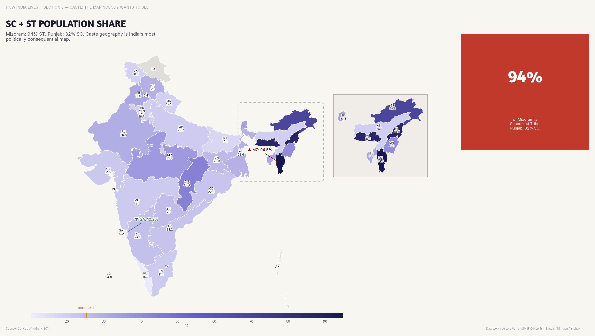
Demographics
SC+ST populations exceed 50% in Mizoram and Meghalaya; in Goa and Delhi they're under 10%. Caste composition shapes every state's politics and policy.
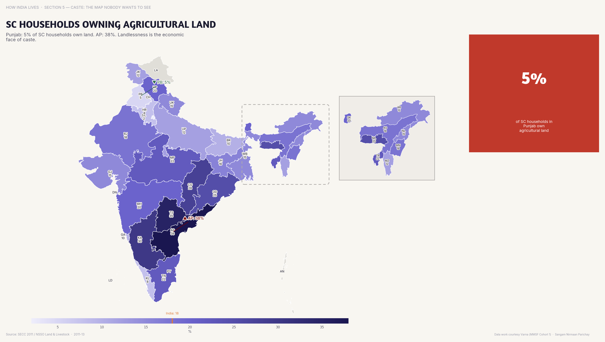
Land
In Punjab, over 30% of SC households own agricultural land; in Bihar, it's near zero. Land is still the primary determinant of caste mobility.
Without land, there is no collateral, no credit, no investment, no exit from poverty. The land ownership map is the economic foundation of caste inequality. Redistribution happened in some states. In others, it never did.
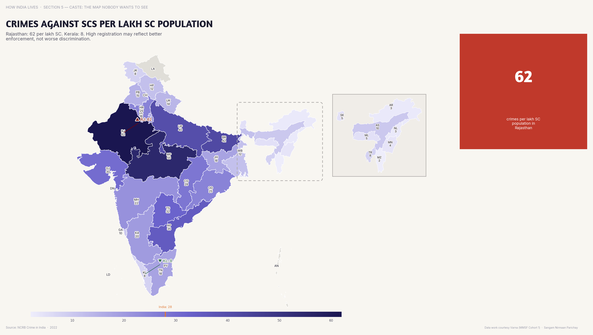
Violence
Rajasthan and UP report the highest crimes against SCs — but high reporting may reflect better policing, not worse violence.
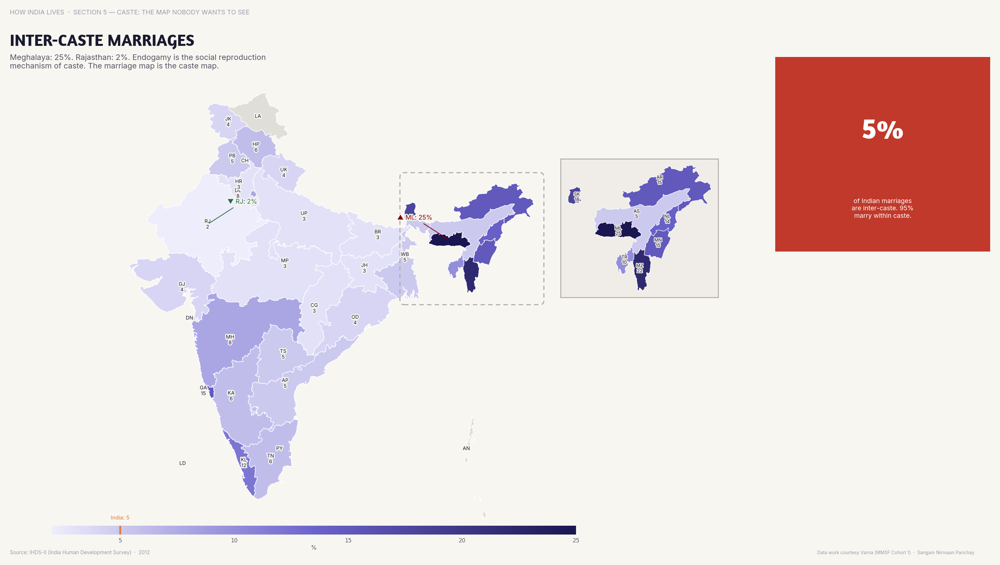
Social Integration
Inter-caste marriage rates remain below 10% nationally. Kerala leads; the Hindi heartland lags. Marriage is where caste endogamy is most stubbornly persistent.
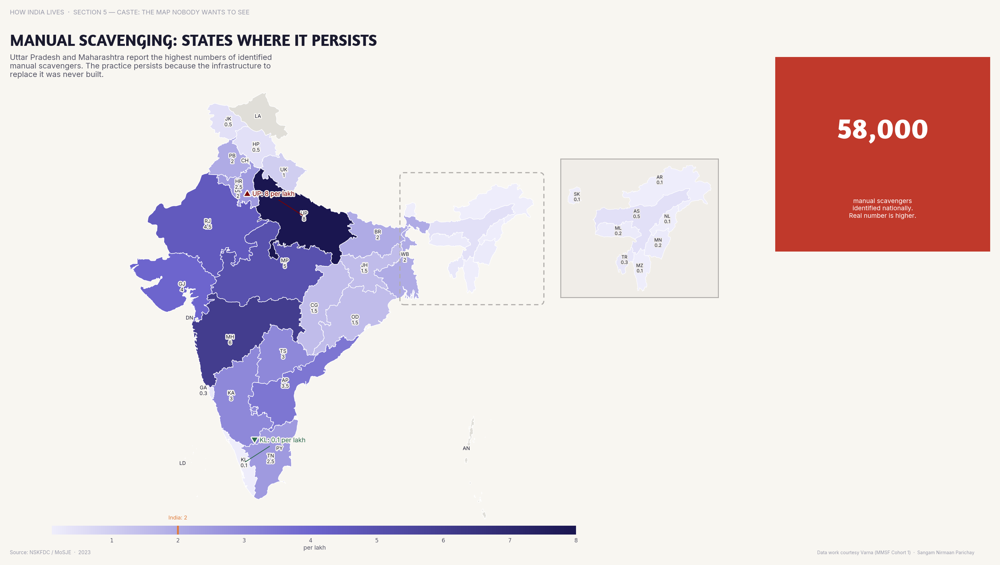
Manual Scavenging
Manual scavenging persists in UP, MP, Rajasthan, and Maharashtra despite being illegal since 1993. Some indignities the law alone cannot abolish.
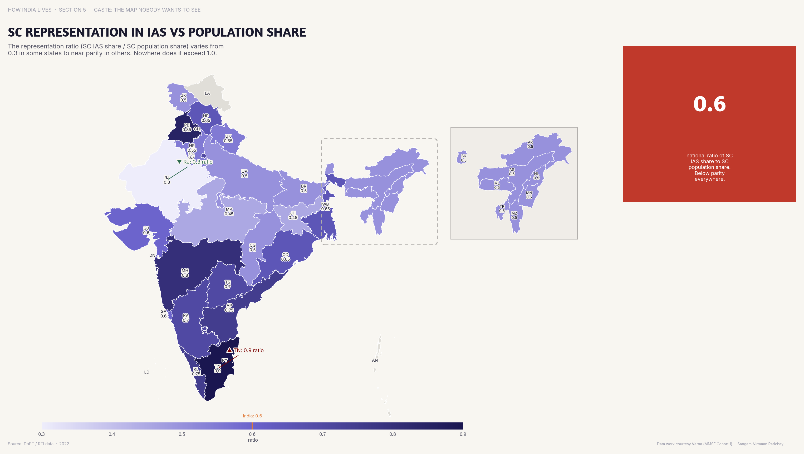
Representation
SC representation in IAS is 15% against a 16.6% population share — close on paper, but concentrated at lower ranks.
Caste is not history. It is geography. It determines where you own land, whom you marry, what violence you face, and what jobs you hold. The maps don't show a fading institution — they show one that has adapted to modernity while preserving its core inequalities.
Explore all caste maps
Part of How India Lives · An ImpactMojo Project
India's Climate Map: Heat, Water, and Vulnerability
Extreme heat, groundwater collapse, flooding, deforestation — the environmental crisis is not equally distributed.
A How India Lives Story · 3 min read
Climate change in India is not a future threat — it's a present reality. But it hits different states differently. Rajasthan bakes. Assam floods. Punjab's groundwater is collapsing. The maps show that India's environmental crisis has a geography — and that geography follows the lines of poverty.
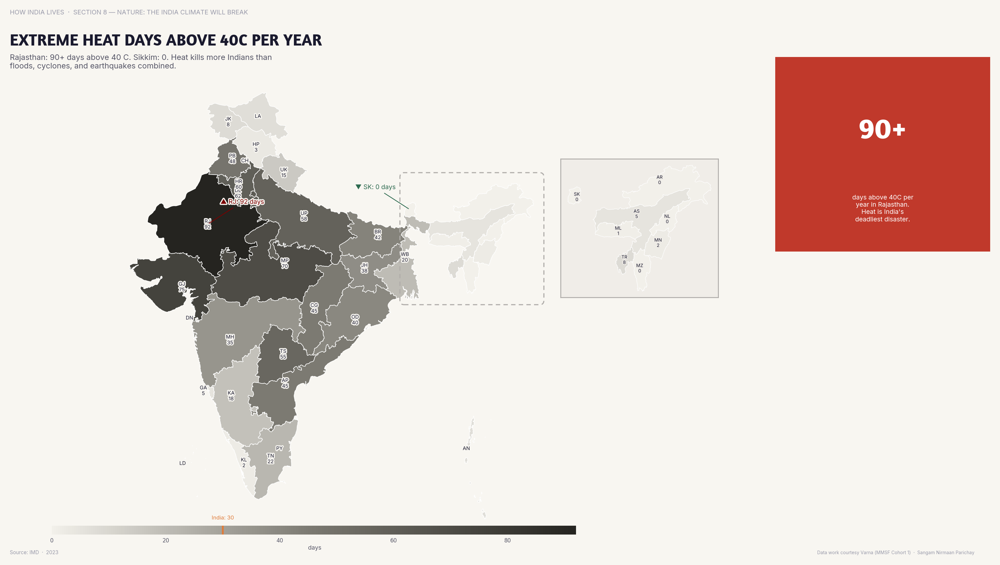
Heat
Parts of Rajasthan and Andhra Pradesh experience 40+ days above 40 degrees C annually. Heat kills more Indians than floods — silently.
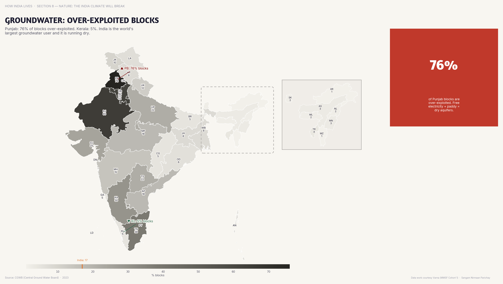
Groundwater
Punjab and Haryana have the most over-exploited groundwater blocks. The Green Revolution's success was built on a resource that is now running out.
Punjab's groundwater crisis is a slow-motion disaster. The water table drops 1 metre every year. Rice-wheat monoculture, free electricity for tube wells, and MSP incentives created a system that is economically rational and ecologically suicidal.
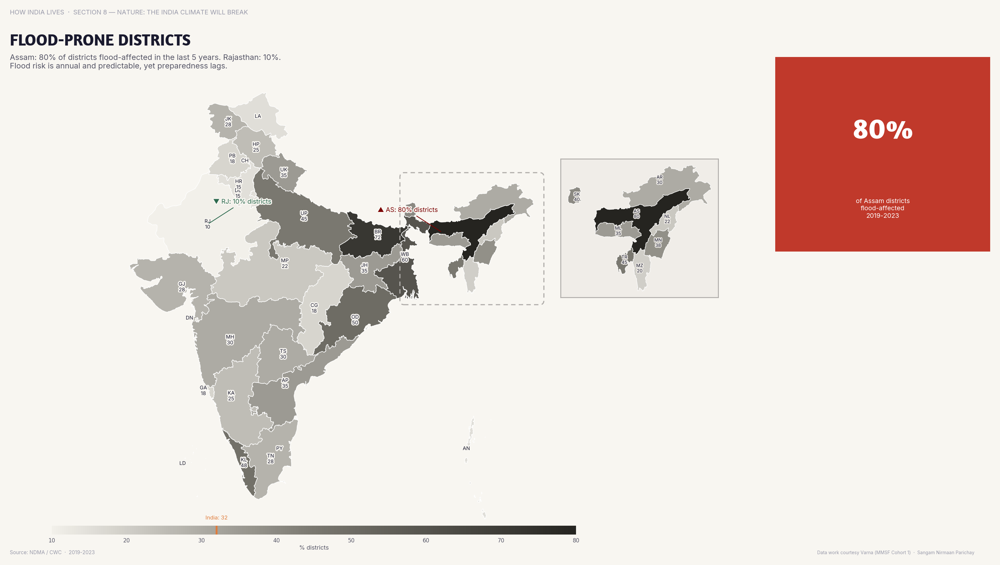
Floods
Assam, Bihar, and UP have the most flood-prone districts. The Brahmaputra and Ganga basins flood annually — displacing millions.
Forests
Northeast states gained forest cover; central Indian states lost it. Development and deforestation still move together.
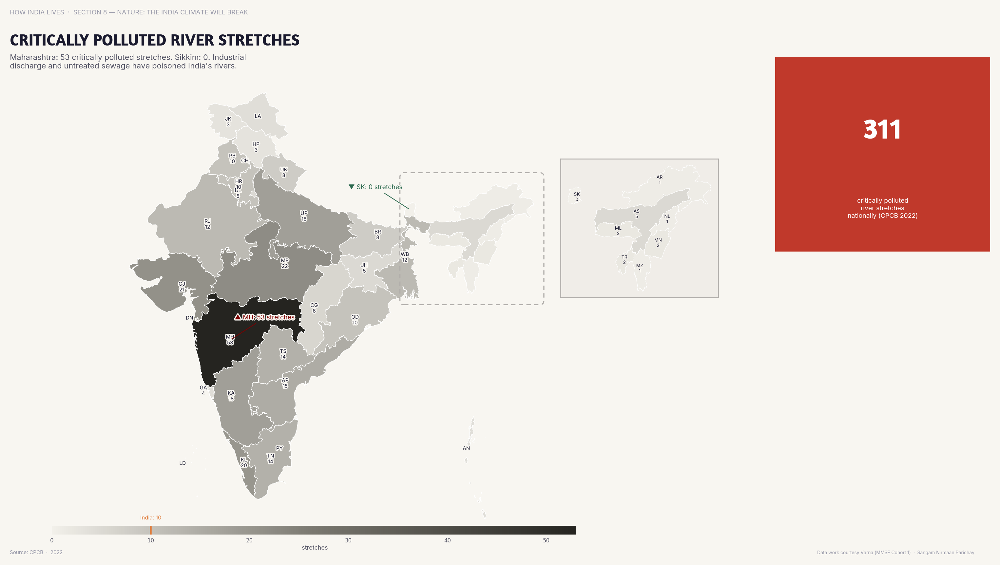
Water Pollution
UP and Maharashtra have the most critically polluted river stretches. Clean river campaigns have yet to bend the curve.
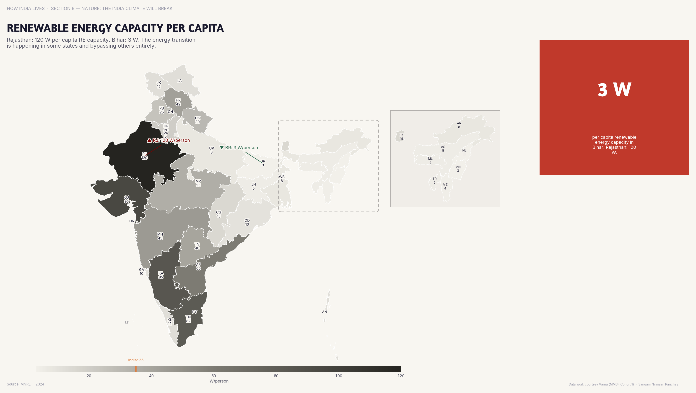
Renewable Energy
Rajasthan and Gujarat lead in renewable energy capacity per capita. The energy transition is happening — but unevenly.
India's environmental maps are inequality maps. The states that contribute least to pollution bear the most flood risk. The states that over-exploit groundwater are the richest agricultural ones. Climate policy that ignores this geography will deepen the very inequalities it should address.
Explore all environment maps
Part of How India Lives · An ImpactMojo Project
Is India's Democracy Equally Healthy Everywhere?
Voter turnout, criminal MPs, internet shutdowns, police density — the democratic experience varies wildly by state.
A How India Lives Story · 3 min read
India is the world's largest democracy. But "democracy" means different things in different states. In Kerala, 90%+ of eligible adults have voted at least once. In UP, 40% of elected MPs have criminal cases. The maps show that democratic health has a geography.
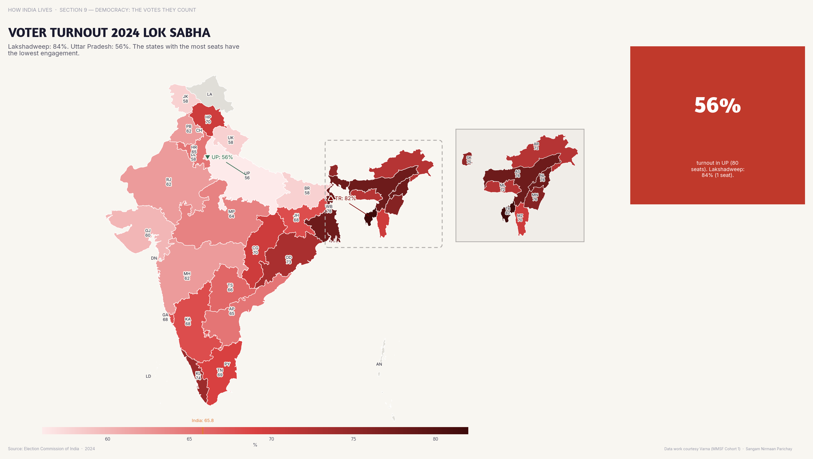
Turnout
Lakshadweep hit 84% turnout in 2024; Bihar was at 57%. A 27-point gap in the most basic democratic act.
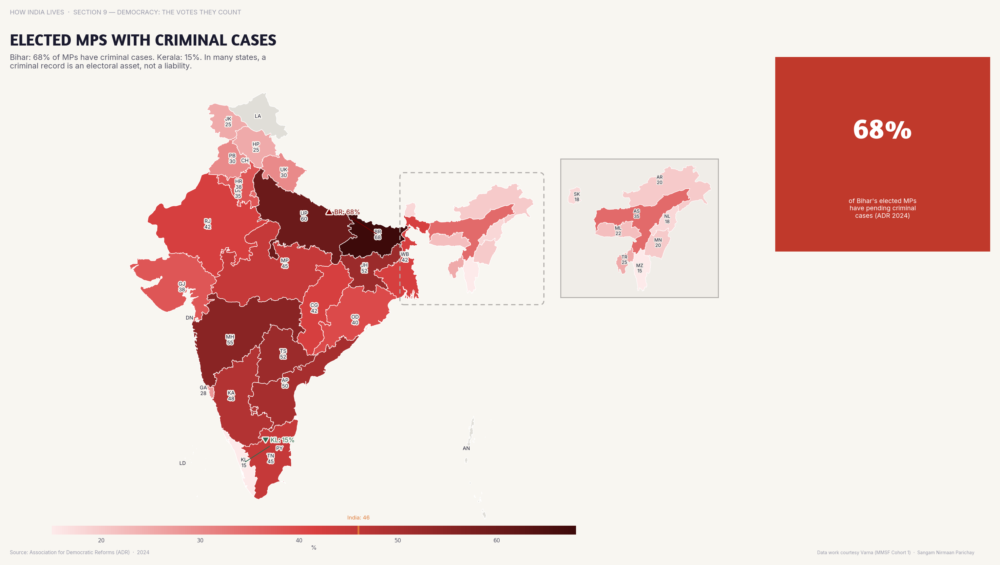
Criminal Representation
In UP and Bihar, 40%+ of elected MPs have criminal cases. When crime pays electorally, the incentive structure of democracy breaks.
The criminalisation of politics is India's most corrosive democratic problem. Candidates with criminal records win more often because they have the resources — money, muscle, and name recognition — that elections demand.
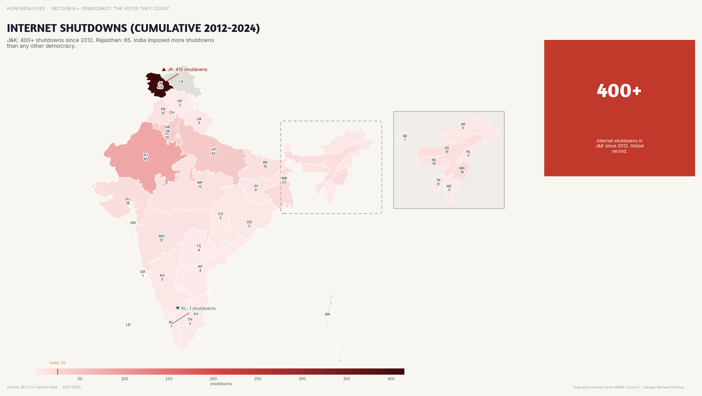
Digital Freedom
J&K alone accounts for 60%+ of cumulative internet shutdowns since 2012. When the state controls information, democracy operates in the dark.
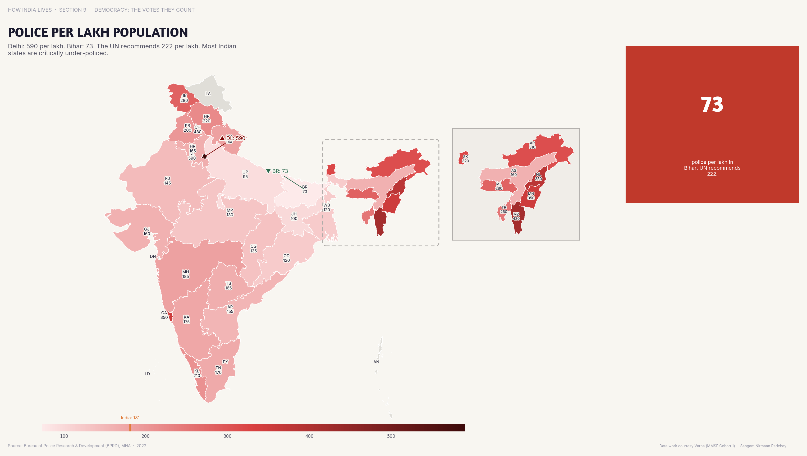
State Capacity
Delhi has 250+ police per lakh; Bihar has under 80. India's police are concentrated where power is, not where crime is.
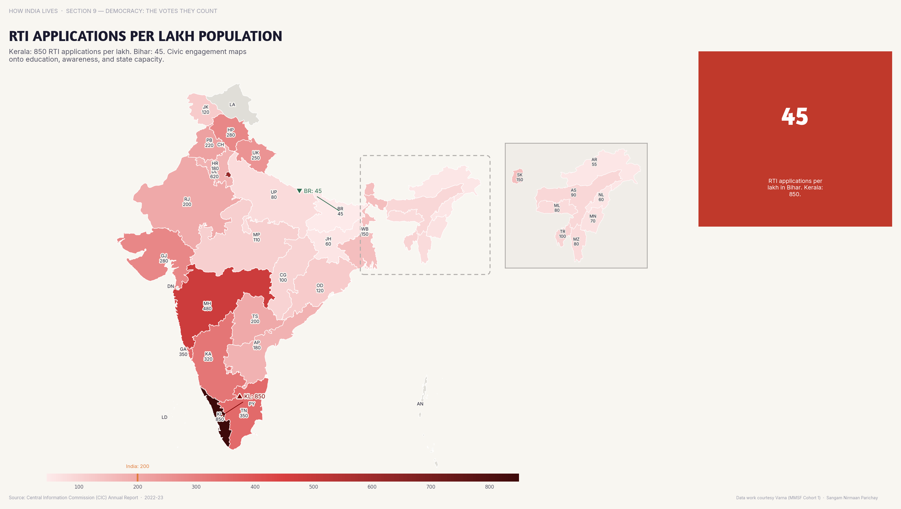
Accountability
Kerala and Maharashtra file the most RTI applications per capita. Active citizenship maps onto literacy, awareness, and trust in institutions.
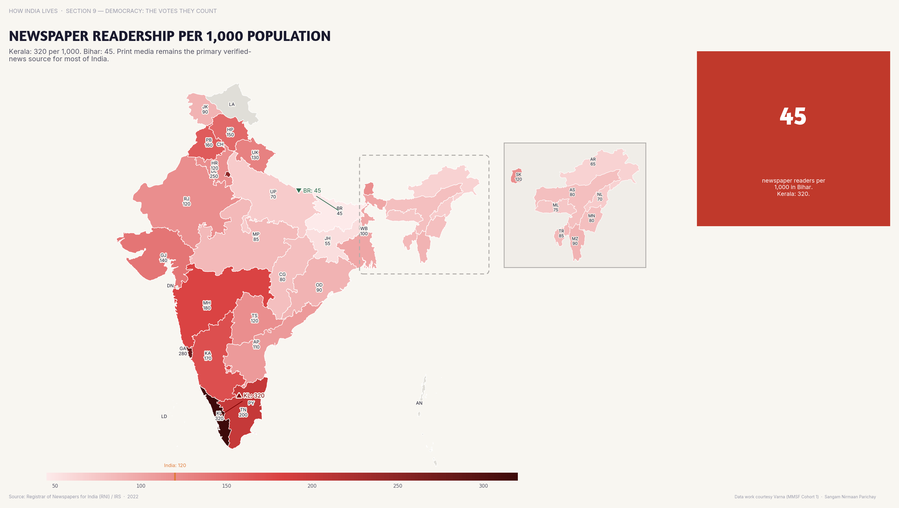
Information Access
Newspaper readership per 1,000 exceeds 300 in Kerala. In several NE states, it's below 50. Democracy requires an informed public.
Democracy is not just elections. It's information access, police accountability, freedom of expression, and citizen participation. The maps show that India's democracy is robust in some states and hollowed out in others — and the pattern follows the same development fault lines visible in every other story.
Explore all democracy maps
Part of How India Lives · An ImpactMojo Project
The Digital Divide, in 5 Maps
Smartphones, internet, television, telecom infrastructure — Digital India reaches some states and skips others entirely.
A How India Lives Story · 2 min read
Digital India assumes digital access. But smartphone penetration in metros exceeds 70% while rural NE states are below 25%. When governance goes digital — DBT, CoWIN, e-governance — the access gap becomes a governance gap.
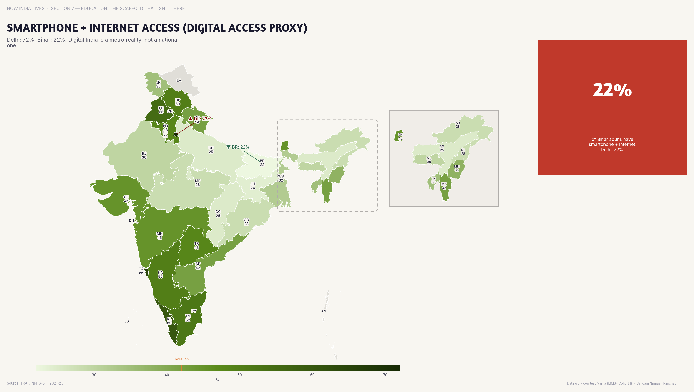
Smartphones
Smartphone + internet access exceeds 70% in metros but under 25% in rural NE states. Digital India has a geography problem.
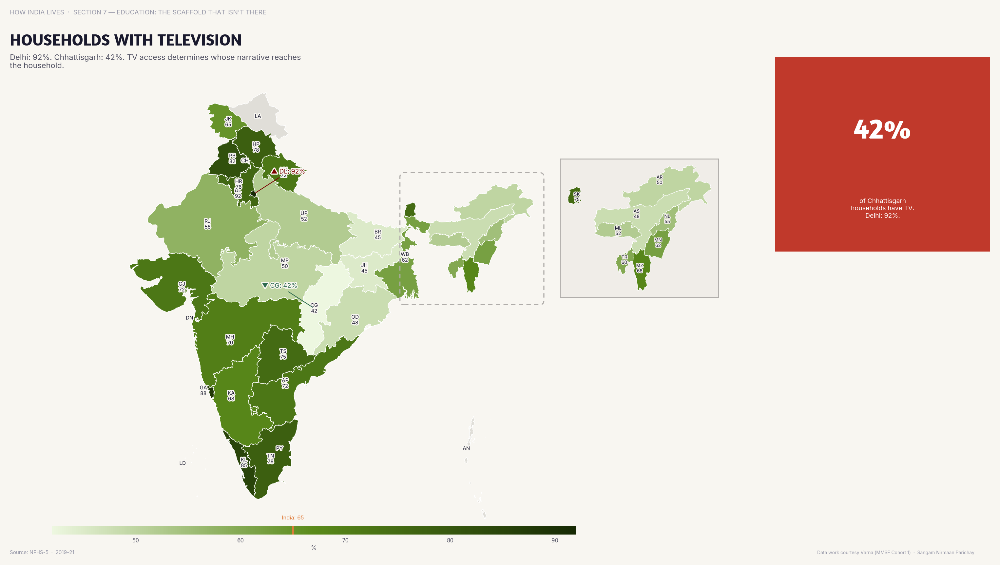
Television
90%+ of urban households have TV; in rural Bihar, under 50%. TV is still the primary information channel for rural India.
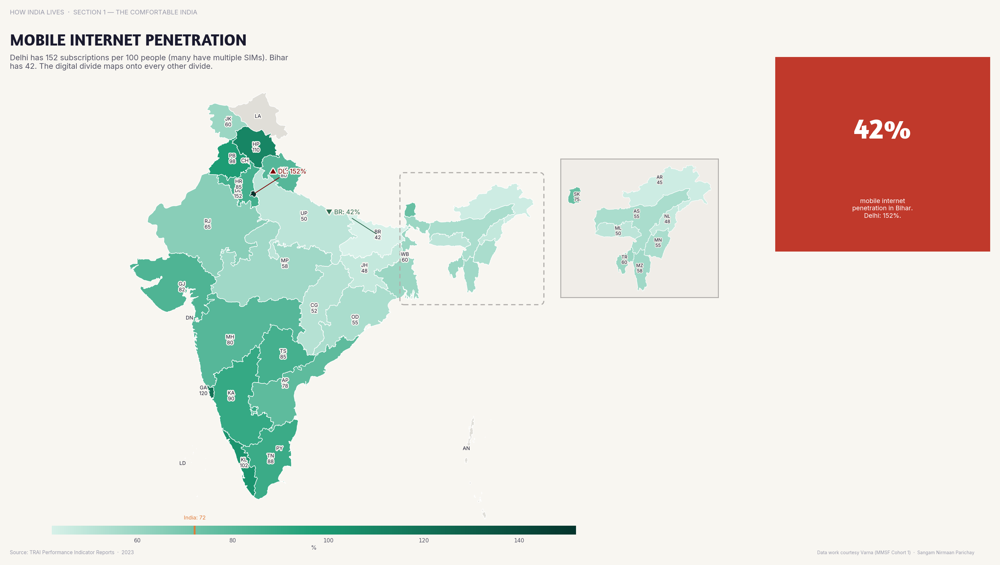
Mobile Internet
Delhi has 75%+ mobile internet penetration; Assam and Bihar are below 30%. The digital highway has toll gates.
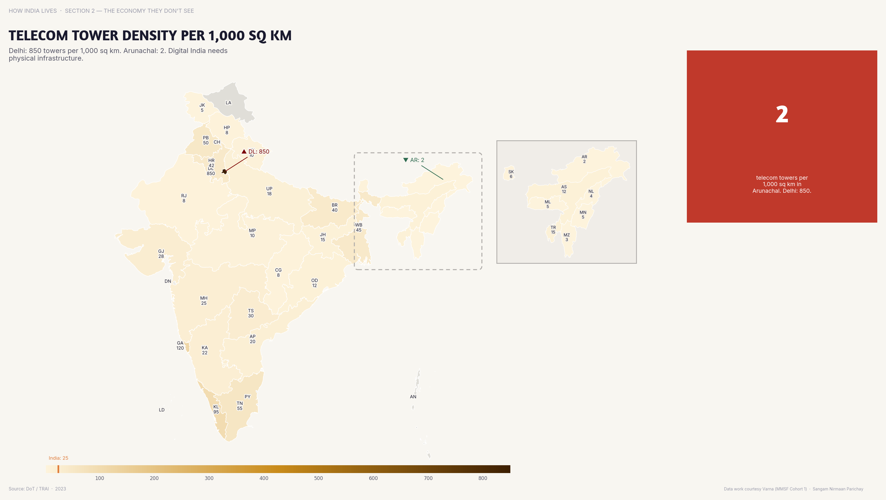
Infrastructure
Telecom tower density follows population density but lags in hilly and tribal areas. No towers, no signal, no digital India.
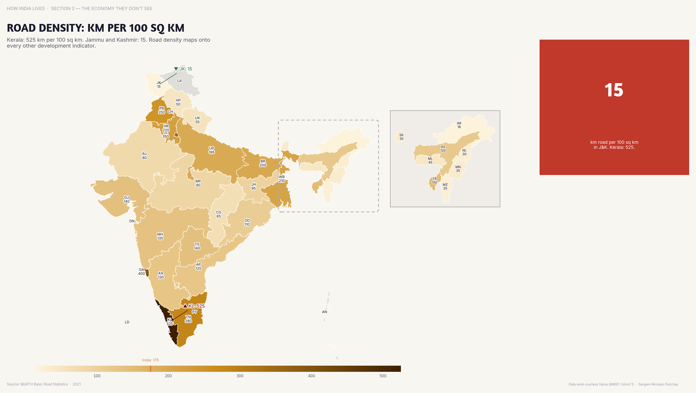
Physical Infrastructure
Kerala has 500+ km road per 100 sq km; Arunachal Pradesh has under 30. Digital access requires physical connectivity first.
The digital divide is not closing — it's deepening. As more services move online, those without access fall further behind. The maps show that "Digital India" is an aspiration, not yet a reality — and the gap follows the same geography as every other inequality.
Explore all economy maps
Part of How India Lives · An ImpactMojo Project
Who Gets the Safety Net?
MGNREGA, PDS, PM-JAY, anganwadis — India's social protection schemes reach some states far better than others.
A How India Lives Story · 2 min read
India spends billions on social protection. But the maps show that spending and reaching are different things. PM-JAY hospital utilisation varies 10x between states. PDS leakage exceeds 40% in some places. The safety net has holes — and the holes have a geography.
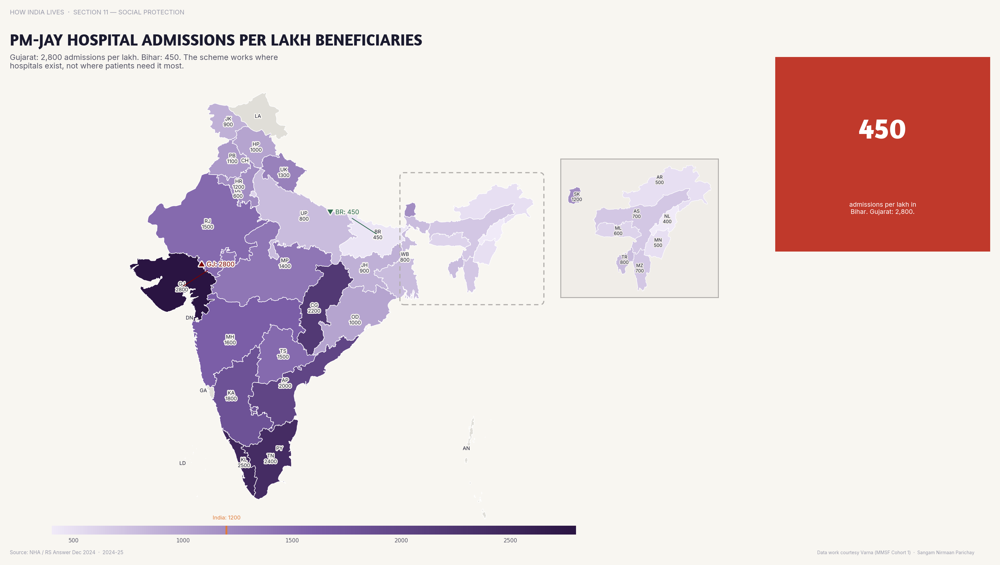
Health Insurance
PM-JAY utilisation per lakh beneficiaries varies 10x. Having insurance on paper and using it in practice are different things entirely.
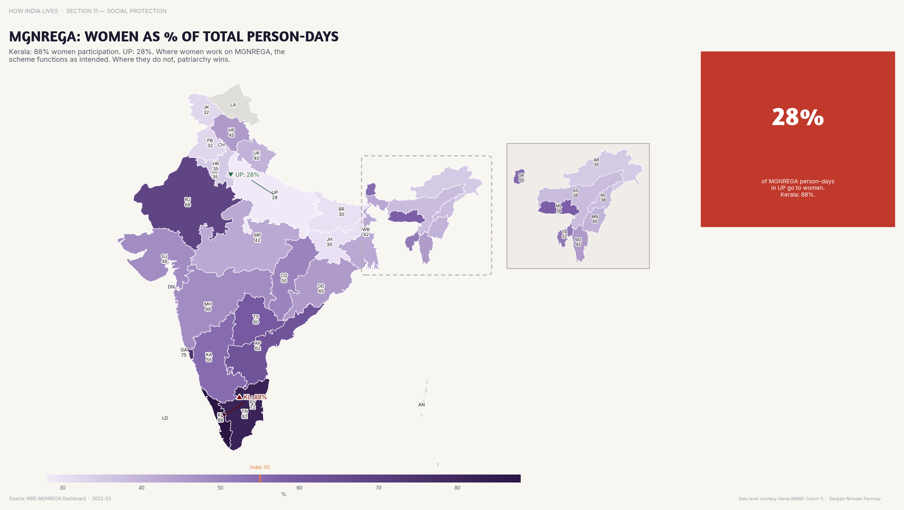
MGNREGA
Women constitute 60%+ of MGNREGA person-days in Tamil Nadu and Kerala but under 30% in UP. The same scheme, vastly different gender outcomes.
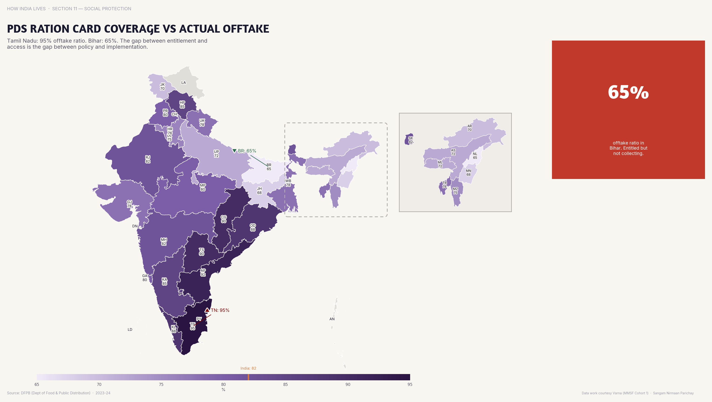
Food Security
PDS coverage vs actual grain offtake shows leakage exceeding 40% in some states. The food reaches the warehouse — not always the household.
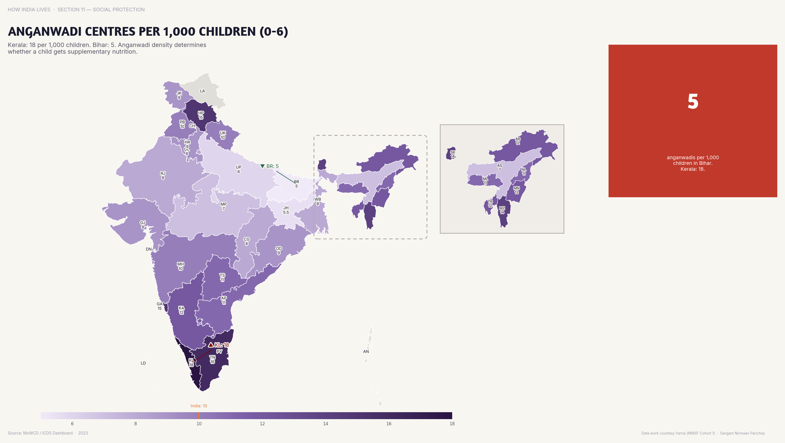
Child Services
Anganwadi centre density per 1,000 children varies 3x between states. Early childhood nutrition depends on which state you're born in.
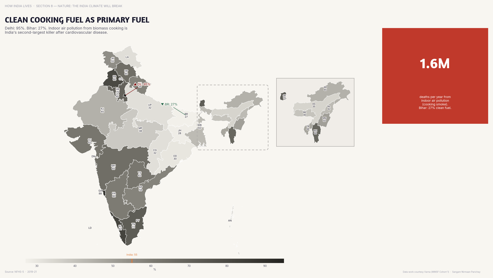
Clean Fuel
95%+ of Kerala households use clean cooking fuel; in Bihar, over 50% still burn biomass. Ujjwala gave cylinders — not always refills.
India's social protection architecture is impressive on paper. The maps show where it works — and where it doesn't. The pattern is consistent: states with better governance deliver better outcomes from the same central schemes. The scheme is the same. The state capacity is not.
Explore all social protection maps
Part of How India Lives · An ImpactMojo Project
How Faith Maps Onto Geography
Religious composition, communal violence, poverty by religion — five maps that show the geography of faith in India.
A How India Lives Story · 2 min read
India is constitutionally secular but religiously diverse in deeply geographic ways. The Northeast is majority Christian. Kashmir is majority Muslim. The "Hindu heartland" is itself divided between Vaishnavism and Shaivism. The maps show that religious India is not one thing.
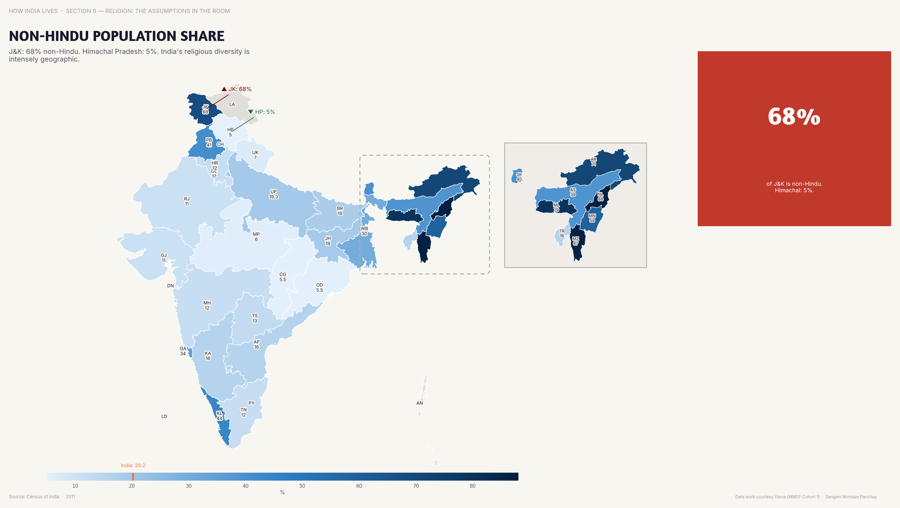
Religious Diversity
In Mizoram, Meghalaya, and Nagaland, over 85% of the population is non-Hindu. India's religious map is far more complex than "Hindu majority."
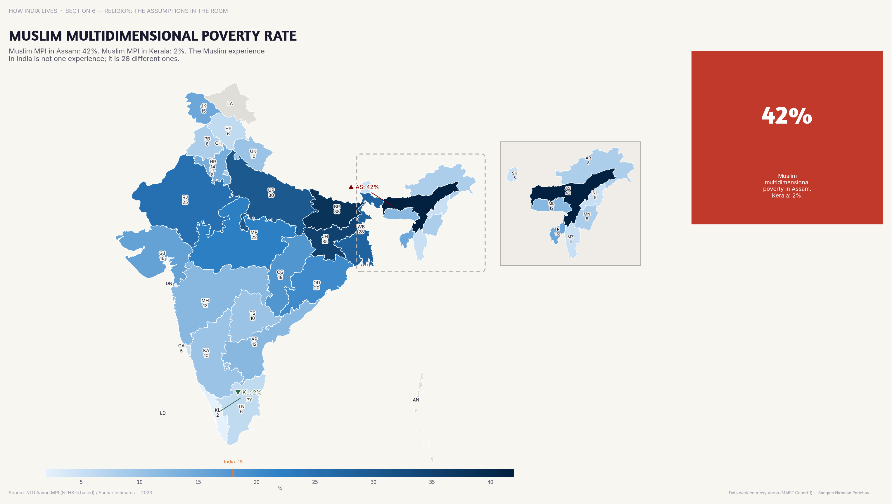
Poverty by Religion
Muslim multidimensional poverty rates exceed 50% in UP and Bihar vs under 15% in Kerala. Same religion, vastly different outcomes by state.
The Muslim poverty map is one of the most important in this collection. A Muslim in Kerala lives a fundamentally different life from a Muslim in UP. Religion doesn't determine poverty — state governance does. The Sachar Committee documented this in 2006. The maps show it hasn't changed.
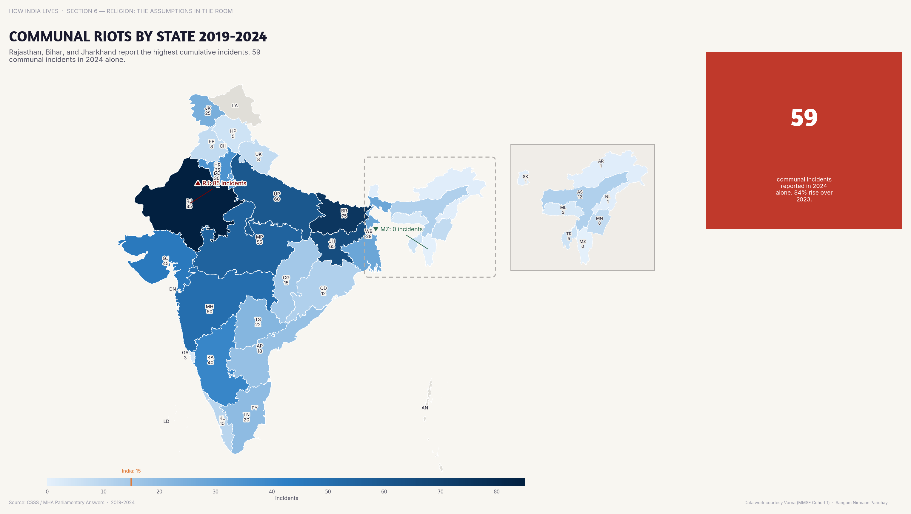
Communal Violence
Communal riots are concentrated in UP, Rajasthan, Gujarat, and MP. The geography of violence follows political fault lines more than demographic ones.
Christianity
Christians form 87% of Nagaland's population but only 2.3% nationally. Christianity in India is almost entirely a northeastern and coastal phenomenon.
Religiosity
90%+ of Indians say religion is "very important" in their lives. India is deeply religious across all faiths — the debate is about coexistence, not secularism vs faith.
India's religious maps are political maps. Where communities live, how they vote, what violence they face, and what economic outcomes they achieve — all follow geographic patterns. Understanding these patterns is not communalism. Ignoring them is negligence.
Explore all religion maps
Part of How India Lives · An ImpactMojo Project